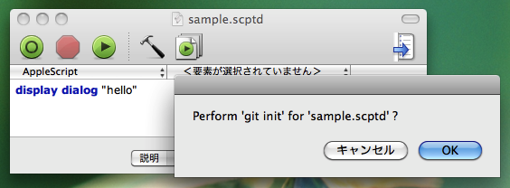

As a beginning, open a script bundle with the "Script Editor". Then launch "git-scptd" from "Script Menu". "git-scptd" must be launched with a lancher utility, because "git-scptd" procecess the frontmost document. I usually launch "git-scptd" from LaunchBar.

If the "OK" button in above dialog is pushed, a repository will be created in the bundle with "git init" command. Also following tasks will be proccessed.